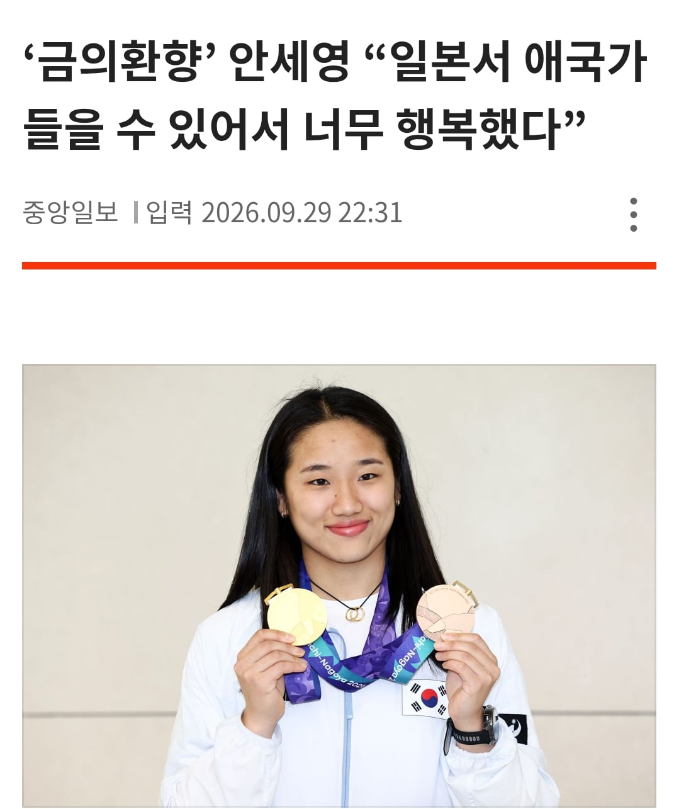
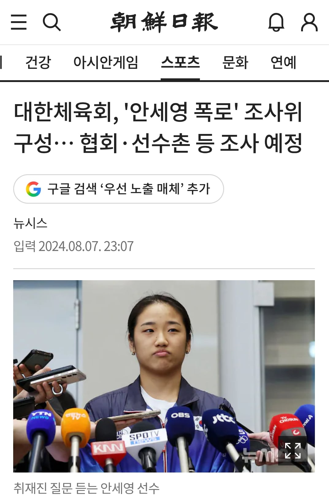

일본 땅에서 애국가 울리기

부조리 고발이 옳았음을 증명하기

일본 땅에서 애국가 울리기

부조리 고발이 옳았음을 증명하기
"배드민턴으로 증명"
협회 폭로 뒤에 폼이 떨어지면 취지가 퇴색될까봐 광고 방송출연 싹 취소하고 연습에만 매진해서 성적으로 증명한 goat 그 자체.
장군감
안세영 열사 이후로 대한체육회회장도 갈아치우고 체육계 전반의 부조리들도 고쳐나가는 시발점을 만든 GOAT
퀸갓세영
국제전 승률 98% 중국에서 붙여준 별명 독고구패
승률 98% 존나 폭력적임ㅋㅋㅋ
적수가 없다
s급 가챠 뽑는거랑 비슷하네요..
패배 98%
2대1패배 88%
2대1승리 1.8%
2대0승리 0.2%
ㄹㅇ 여제임
킹세영
강려크하다
어떤 새끼는 군대 면제 인증 ㅋㅋㅋㅋㅋ
Goat
넘세영
넌 BTS급 인정한다
원래 면제셔서
배드민턴계 정상화는 역시 신세영
신 세 영
인 간 열 사
피겨는 연아, 민턴은 세영
ㅋㅋㅋ 승률 98프로 실화냐고 ㅋㅋㅋㅋㅋ
퀸갓세영 존나세영
그의 나이 24살